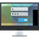

SDDM
Dieser Artikel wurde für die folgenden Ubuntu-Versionen getestet:
Ubuntu 16.04 Xenial Xerus
Zum Verständnis dieses Artikels sind folgende Seiten hilfreich:
 SDDM (Simple Desktop Display Manager) ist der unter KDE Plasma 5 bevorzugte Displaymanager und ersetzt seit Kubuntu 15.04 die vorher verwendeten Programme LightDM bzw. KDM. Er wurde in C++ von Grund auf neu geschrieben und unterstützt eine Personalisierung in Form von QML-Themen.
Installation¶
Das Programm ist in der Standardinstallation von Kubuntu bereits enthalten. Ansonsten kann SDDM über das folgende Paket nachinstalliert [1] werden:
sddm (universe)
 mit apturl
mit apturl
Paketliste zum Kopieren:
sudo apt-get install sddm
sudo aptitude install sddm
Um SDDM grafisch konfigurieren zu können, muss noch das entsprechende Modul für die KDE-Systemeinstellungen installiert werden:
kde-config-sddm (universe)
mit apturl
Paketliste zum Kopieren:
sudo apt-get install kde-config-sddm
sudo aptitude install kde-config-sddm
Konfiguration¶
Bei einer nachträglichen Installation muss SDDM ggf. mittels des Befehls [2]:
systemctl enable sddm.service
noch aktiviert werden.
KDE Systemeinstellungen¶
Über "K-Menü -> Systemeinstellungen -> Starten & Beenden -> Anmeldebildschirm" kann das Design angepasst werden. Dazu muss man sich authentifizieren [3].
Unter der Registerkarte "Erweitert" können Zeigerdesign, automatische Anmeldung sowie minimale und maximale UID (Benutzerkennung) eingestellt werden. Ebenso bietet "Erweitert" die Möglichkeit, Befehle zum Herunterfahren und Neustart anzupassen.
| SDDM Design-Änderung |
| SDDM erweiterte Optionen |
Konfigurationsdatei¶
Die Konfigurationsdatei für SDDM liegt unter /etc/sddm.conf. Diese Datei besitzt eine eigene Manpage, in der weitere Abschnitte wie [XDisplay], [WaylandDisplay] und andere selten benötigte Konfigurationsmöglichkeiten erläutert werden.
SDDM arbeitet mit systemd zusammen, so dass keine neue Konfigurationsdatei erstellt werden muss. Eine Beispielkonfiguration kann jedoch mittels:
sddm --example-config > /etc/sddm.conf
erstellt und anschließend mit Root-Rechten bearbeitet werden [4].
Allgemein¶
Im Abschnitt [General] können der Status des Zahlenblocks (NumLock) sowie Befehle zum Herunterfahren und Neustart definiert werden. Erlaubte Werte für NumLock sind on, off oder none. Optional können eigene Befehle zum Herunterfahren und Neustart verwendet werden.
[General] Numlock=on HaltCommand=/EIGENES/SKRIPT/ZUM/HERUNTERFAHREN RebootCommand=/EIGENES/KOMMANDO/ZUM/NEUSTART
Design¶
Im Abschnitt [Theme] der Konfigurationsdatei können das Standardthema, Mausthema sowie der Avatar geändert werden. Ein Avatar ist eine Bilddatei im PNG-Format mit dem Namen BENUTZERNAME.face.icon. Diese kann in den Vorgabeordner /var/lib/AccountsService/icons/ kopiert oder der Pfad auf Wunsch angepasst werden (Symlinks auf Bilddateien funktionieren nicht).
[Theme] ThemeDir=/usr/share/sddm/themes # Standardverzeichnis für Designvorlagen Current=maui # Standardthema CursorTheme=breeze_cursors # Mausthema FacesDir=/var/lib/AccountsService/icons/ # Verzeichnis für Avatarbilder
Benutzer¶
Im Abschnitt [Users] können bestimmte Nutzer über eine kommagetrennte Liste am Login-Screen ausgeblendet werden. Außerdem speichert SDDM den zuletzt angemeldeten Benutzer und die zuletzt gewählte Sitzung (session). Ist dies nicht erwünscht, so muss man die Einträge entsprechend auf false setzen. SDDM nutzt als Standard einen UID-Bereich von 1000 bis 65000, der standardmäßig auch von Kubuntu verwendet wird und daher nicht verändert werden sollte.
[Users] HideUsers=alfred,berta,fridolin RememberLastUser=true RememberLastSession=true MaximumUid=65000 MinimumUid=1000
Automatische Anmeldung¶
Achtung!
Wer ein verschlüsseltes Homeverzeichnis verwendet, sollte auf eine automatische Anmeldung verzichten, weil dadurch der Aspekt der Datensicherheit unterlaufen und die Funktionsweise erheblich beeinträchtigt wird.
In der Konfigurationsdatei kann mittels folgender Einträge eine automatische Anmeldung eingestellt werden:
[Autologin] User=BENUTZERNAME Session=plasma.desktop Relogin=false # startet die Session beim Abmelden sofort neu
Die möglichen Werte für Session= findet man mittels:
ls /usr/share/xsessions/
Weitere Designs¶
Weitere Designs kann man über Pakete, deren Namen mit sddm-theme beginnen, installieren und wie unter Konfiguration beschrieben aktivieren.
| Breeze |
| Circles |
| Elarun |
| Lubuntu-chooser |
| Maldives |
| Maui |
Problembehebung¶
Gastsitzung¶
Eine Gastsitzung wie bei LightDM ist zwar geplant, aber bisher nicht vorhanden (Stand: Januar 2017).
systemd enable funktioniert nicht¶
Falls der vorher genutzte Displaymanager bei der Installation nicht automatisch durch SDDM ersetzt wird, empfiehlt sich erst ein reinstall
sudo apt-get install --reinstall sddm
Sollte das auch nicht klappen, kann man dies mittels folgenden Befehls erzwingen:
sudo ln -s --force /lib/systemd/system/sddm.service /etc/systemd/system/display-manager.service
Über die Option --force wird der alte Symlink entfernt.
Keine Anmeldung trotz korrekten Passworts¶
Wird die Eingabe des korrekten Passworts nicht akzeptiert, enthält es deutsche Umlaute, Sonderzeichen und/oder die Buchstaben z und/oder y, ist offensichtlich nicht der richtige Zeichensatz geladen. Mit folgender Befehlszeile (ausgeführt in einer virtuellen Konsole oder über Recovery Mode), hier für deutsche Tastaturbelegung, erzwingt man dies:
echo "setxkbmap de" | sudo tee -a /usr/share/sddm/scripts/Xsetup

 Übersichtsartikel
Übersichtsartikel- Erstellt mit Inyoka
-
 2004 – 2017 ubuntuusers.de • Einige Rechte vorbehalten
2004 – 2017 ubuntuusers.de • Einige Rechte vorbehalten
Lizenz • Kontakt • Datenschutz • Impressum • Serverstatus -
Serverhousing gespendet von